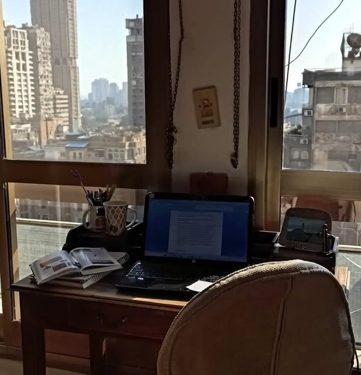

Próximas novelas
Esta historia acaba de abrir la puerta. Lo que hay al otro lado se está escribiendo ahora.
Esto es solo el principio
Una puerta abierta al mar es mi primera obra publicada, pero no será la última. Mi deseo es que sea la primera parte de una trilogía en la que el amor se mezcle con las emociones, las diferencias culturales, el mundo laboral y la búsqueda de la propia identidad.
Muchas lectoras me escriben al terminar la última página con la misma pregunta: ¿habrá segunda parte? Mi deseo es que sí: Nadia y Samir todavía tienen mucho que contar.
Es un proyecto que empieza a caminar, pero que avanza con fuerza: cada lectora que me escribe, cada presentación y cada club de lectura me confirman que estos personajes tienen mucho más que contar.
Avísame cuando salga la siguiente
Mis libros
Un hueco publicado y dos esperando su historia.

Una puerta abierta al mar
Libro I · Publicado en 2026 · Editorial Gusanillo
Segunda parte
En proceso de escritura
Tercera parte
El cierre de la trilogía
Un camino que se consolida
Nace Una puerta abierta al mar
Publicación con Editorial Gusanillo, a la venta en su web y en Amazon.
Primeras presentaciones
Pop-up markets, reseñas de lectoras en Bookstagram y la presentación en las Bibliotecas Públicas de Madrid.
Escribiendo la continuación
Nuevos capítulos, nuevas ciudades y personajes que vuelven. Iré compartiendo avances en Instagram.
Segunda novela
Título, portada y fecha se anunciarán aquí y en mis redes.
Cada historia que termino me deja una puerta abierta a la siguiente.